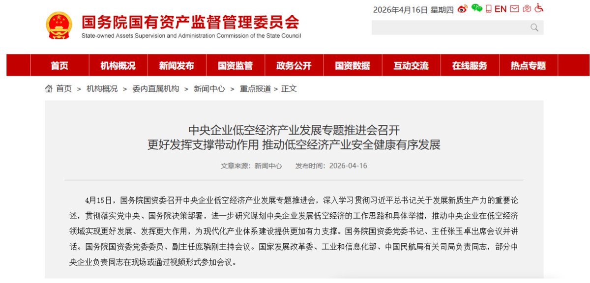

拱北靠北
@psyofsouthwest
@Alex_perception 浙江卫视新节目《奔跑吧领导》

Alex_感知
@Alex_perception
说起这个低空经济= =特别逗，前些日子受邀去国家国防科技工业局下面一个正规协会开会。听着领导们发愁这个低空产业要搞什么，大家聊了一下午也没几个能拿出点想法的。
但是说起来，现在这个产业在国内这个消费持续下降的周期内，怎么都难搞。 https://t.co/Y2uvRge5au